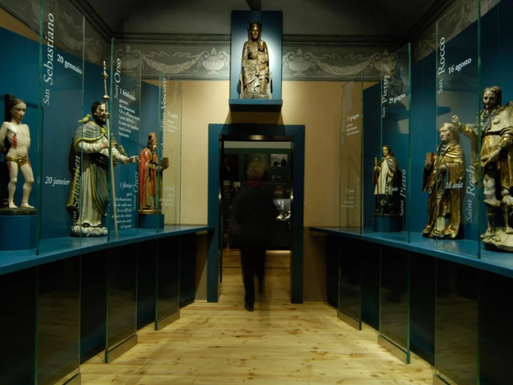
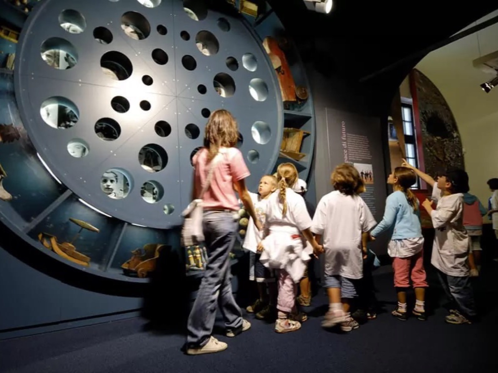
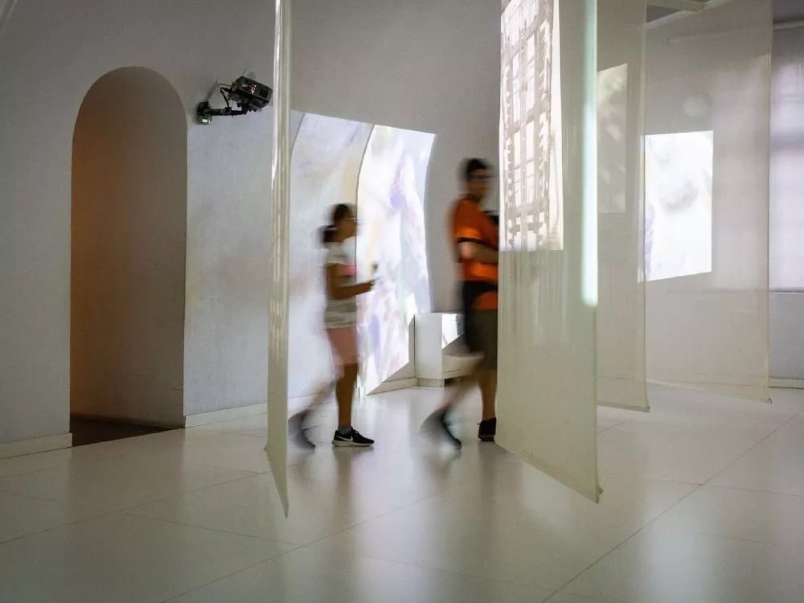

Nell'ambito delle iniziative per i 20 anni di attività del Forte di Bard, ho seguito la logistica e l'organizzazione della conferenza “I musei fanno bene alla salute. Le nuove sfide del sistema museale italiano tra ricerca, cura, educazione ed innovazione”.
Un dibattito che ha analizzato la funzione storica dei musei e la loro funzione sociale attuale.
Sul palco, Domenico Piraina, direttore di Palazzo Reale a Milano, Stefano Karadjov, direttore della Fondazione Brescia Musei, Maurizio Vanni, docente di museologia e storico dell'arte presso l'Università di Pisa, Cristiano Leone, presidente del Complesso museale Santa Maria della Scala di Siena e Gianfranco Marchesi, psichiatra ed esperto di neuroscienze. A moderare l'incontro, Chiara Gatti, critica e storica dell'arte.
Key Activities
- Logistica e coordinamento on site
- Relazioni esterne
Galleria


